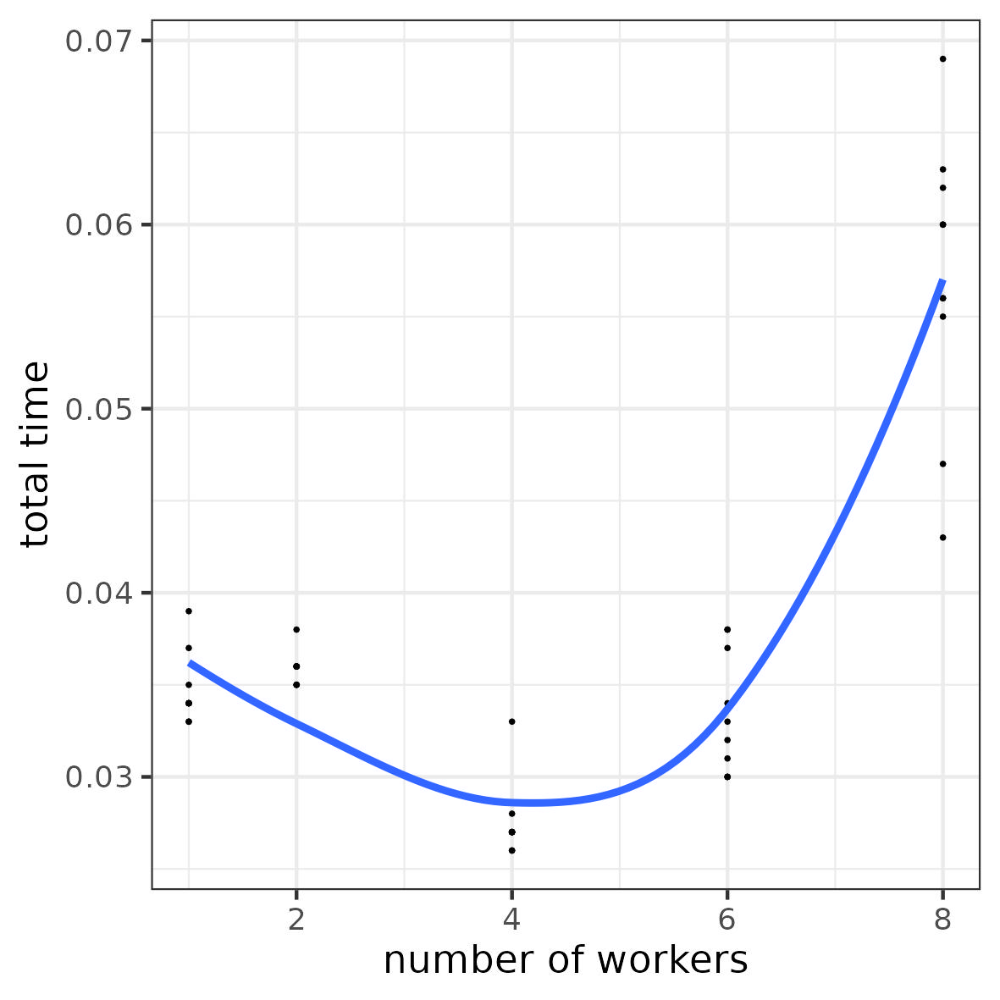
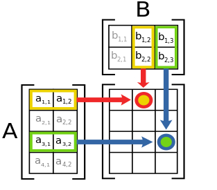

2 Introduction to parallel computing
A very general (and generic) introduction
3 Parallel computing: the intuition
3.1 Computing ?
- a computation = a succession of tasks to complete
- a task \approx a single command/action or a group of commands/actions
Example 1:
Example 2:
# task i:
# sum of elements at index i
# from two vectors
for i in range(10):
res[i] = a[i] + b[i]# task 1: matrix product
C = A @ B
# task 2: colwise sum over matrix C
np.sum(C,axis=0)3.2 Why parallel computing?
Objective: accelerate computations <=> reduce computation time
Idea: run multiple tasks in parallel instead of sequentially
3.3 Context (level 1)
different tasks to complete
one or more workers to complete the tasks
3.4 Sequential computing
- n tasks to complete (n>1)
- 1 worker
Total time (exercise)
\sum_{i=1}^n t_i \sim O(n)\ with t_i time to complete task i}
3.5 Parallel computing (the most simple case)
- n tasks to complete (n>1)
- p workers (p>=n)
Total time (exercise)
\underset{i=1,\dots,n}{\text{max}}\{t_i\}\sim O(1)\ with t_i time to complete task i
Potential bottleneck? (exercise)
not enough workers to complete all tasks
3.6 Task scheduling
n tasks to complete (n>1)
p workers (p<n)
Need: assign multiple tasks to each worker (and manage this assignment)
┌────────┐ ┌────────┐ ┌────────┐ ┌────────┐
│worker 1│ │worker 2│ │worker 3│ │worker 4│ ...
└────────┘ └────────┘ └────────┘ └────────┘
┌─
│ task 1 task 2 task 3 task 4 ...
│ │ │ │ │
│ ▼ ▼ ▼ ▼
│ task p+1 task p+2 task p+3 task p+4
│ │ │ │ │
│ ▼ ▼ ▼ ▼
│ . . . .
│ . . . .
▼ . . . .
TimeTotal time (exercise)
\underset{k=1,\dots,p}{\text{max}}\{T_k\}\sim O(n/p)\ with T_k = \sum_{i\in I_k} t_i, total time to complete all tasks assigned to worker k (where I_k is the set of indexes of tasks assigned to worker k)
3.7 Illustration: parallel computing (simple case)
a task = “wait 1 \mus”
Objective: run 100 tasks
Number of workers: 1, 2, 4, 6, 8
Why is the time gain not linear?
3.8 Context (level 2)
different tasks to complete
multiple workers to complete the tasks
one or more working resources1
Potential bottleneck? (exercise)
not enough resources for all workers
3.9 Resource management
- n tasks to complete (n>1)
- p workers (p<n)
- q working resources (q<p)
Need:
- assign workers to each resource (and manage this assignment)
Total time = ? (exercise)
Potential issues? (exercise)
┌──────────┐ ┌──────────┐
│resource 1│ │resource 2│ ...
└──────────┘ └──────────┘
┌─
│ task 1 task 2 ...
│ (worker 1) (worker 2)
│ │ │
│ ▼ ▼
│ task 3 task 4
│ (worker 3) (worker 4)
│ │ │
│ ▼ ▼
│ task p+1 task p+2
│ (worker 1) (worker 2)
│ │ │
│ ▼ ▼
│ task p+3 task p+4
│ (worker 3) (worker 4)
│ │ │
│ ▼ ▼
│ . .
│ . .
▼ . .
Time3.10 Resource management
Total time = \text{max}_{\ell=1,\dots,q}\{\tau_\ell\}\sim O(n/q)
with \tau_\ell = \sum_{i\in J_\ell} t_i = total time to complete all tasks done on resource \ell (where J_\ell is the set of indexes of tasks assigned done on resource \ell)
Potential issues? multiple workers want to use the same working resources
- they have to wait for their turn (workers are not working all the time)
- risk to jam2 resource access (organizing resource access takes time)
3.11 Illustration: overhead for resource access
a task = “wait 1 \mus”
Objective: run 100 tasks
8 computing units
Number of workers: 1, 2, 4, 8, 16, 32
3.12 Context (level 3: realistic)
different tasks to complete
multiple workers to complete the tasks
one or more working resources
Input/Output (I/O)
Input: each task requires some materials (data) to be completed, these materials are stored in a storage area (memory)
Output: each task returns a result that need to be put in the storage area (memory)
Examples: vector/matrix/array operations, process the content of multiple files
3.13 Input/Output management
- n tasks to complete (n>1)
- p workers (p<n)
- q working resources (q<p)
- tasks need input (data) and produce output (results)
Need:
- load input (data) from storage when needed by a worker to complete a task
- write output (result) to storage when a task is completed
Total time = ? (exercise)
3.14 Parallel computing: realistic model
┌──────────┐
│resource 1│ load task 1 write load task 3 write
└──────────┘ data 1 ──► (worker 1) ──► result 1 ──► data 3 ──► (worker 3) ──► result 3 ──► . . .
┌──────────┐
│resource 2│ load task 2 write load task 4 write
└──────────┘ data 2 ──► (worker 2) ──► result 2 ──► data 4 ──► (worker 4) ──► result 4 ──► . . .
.
.
.
└─────────────────────────────────────────────────────────────────────────────────────►
Time3.15 Computing time and potential bottleneck
Total time = \text{max}_{\ell=1,\dots,q}\{\tau_\ell\}
with \tau_\ell = \sum_{i\in J_\ell} t_{i,\text{in}} + t_i + t_{i,\text{out}} = total time to complete all tasks done on resource \ell (where J_\ell is the set of indexes of tasks done on resource \ell)
Potential bottlenecks:
- input (data) are not ready/available when a worker need them to complete a task (the worker have to wait)
- output (results) cannot be written when a worker complete a task (the worker have to wait)
Overhead on memory access
- concurrent access to a memory space when reading input and/or when writing output
- concurrent data transfer from or to memory (the “pipe” are jammed)
3.16 Illustration 1: overhead for I/O access
- a task
- simulate a vector of 10 values
- compute the mean
- Objective: run 10000 tasks
- Resources: 8 computing units
- Number of workers: 1, 2, 4, 6, 8

3.17 Illustration 2: overhead for I/O access
a task = “compute the sum of a given row in a matrix”
Objective: compute all row-wise sums for a 10000 \times 1000 matrix (i.e. 10000 tasks)
Resources: 8 computing units
Number of workers: 1, 2, 4, 6, 8
3.18 The vocabulary of parallel computing
- tasks = a command or a group of commands
- worker = a program or a sub-program (like a thread or a sub-process) → Software
- working resources = processing units → Hardware
- input = data
- output = result
- storage = memory
Attention: “worker” may sometimes refer to a working resource in the literature
3.19 Task synchronization
Sometimes tasks cannot be done in parallel
- Specific case: output of task i_1 is input of task i_2
- Need: wait for task i_1 before task i_2 starts
Example 1:
# task 1: matrix product
C = A @ B
# task 2: colwise sum over matrix C
np.sum(C,axis=0)Example 2:
- task 1: train a predictive model
- task 2: use the trained model to predict new labels
4 Hardware
4.1 Computing resources
- a single computer
- a persistent memory (hard drive) with very slow access
- a non-persistent shared memory (RAM) with faster access
- one or more computing units called CPUs3 (central processing units) linked to the RAM
- maybe one or more GPUs (graphical processing units) linked to the RAM
- multiple computers linked through a network (very slow communication)
4.2 CPU (central processing unit)
multi-core CPU: multiple computing units (called “cores”) in a single processor
different level of local memory called “cache”
to run a computation: transfer data from shared memory to local cache (and vice-versa for results) \rightarrow potential bottleneck
┌─────────────────┬───────────────────────┐
│ │ │
┌──────────┴──┐ ┌─────── │ ────────┐ ┌─────── │ ────────┐
│ MEMORY │ │ CPU1 │ │ │ CPU2 │ │
│ │ │ ┌──────┴───────┐ │ │ ┌──────┴───────┐ │
│ │ │ │ Local Memory │ │ │ │ Local Memory │ │
│ │ │ └──────┬───────┘ │ │ └──────┬───────┘ │
│ │ │ │ │ │ │ │
│ │ │ ┌───┐ │ ┌───┐ │ │ ┌───┐ │ ┌───┐ │
│ │ │ │ C ├──┼──┤ C │ │ │ │ C ├──┼──┤ C │ │
│ │ │ └───┘ │ └───┘ │ │ └───┘ │ └───┘ │
└─────────────┘ │ │ │ │ │ │
│ ┌───┐ │ ┌───┐ │ │ ┌───┐ │ ┌───┐ │
│ │ C ├──┴──┤ C │ │ │ │ C ├──┴──┤ C │ │
│ └───┘ └───┘ │ │ └───┘ └───┘ │
│ │ │ │
└──────────────────┘ └──────────────────┘4.3 GPU (graphical processing units)
“many-core” computing card
local memory
slower connection to shared memory than CPUs
to run a computation: transfer data from host shared memory to local memory (and vice-versa for results)
\rightarrow potential bottleneck
┌───────────────────────────────────────────┐
│ │
│ ┌─────────────────┐ │
│ │ │ │
┌────────┴─┴──┐ ┌─────── │ ────────┐ ┌─────── │ ─────────┐
│ MEMORY │ │ CPU1 │ │ │ GPU │ │
│ │ │ ┌──────┴───────┐ │ │ ┌──────┴───────┐ │
│ │ │ │ Local Memory │ │ │ │ Local Memory │ │
│ │ │ └──────┬───────┘ │ │ └──────┬───────┘ │
│ │ │ │ │ │ │ │
│ │ │ ┌───┐ │ ┌───┐ │ │ ┌─┬─┬─┼─┬─┬─┬─┐ │
│ │ │ │ C ├──┼──┤ C │ │ │ │C│C│C│C│C│C│C│ │
│ │ │ └───┘ │ └───┘ │ │ ├─┼─┼─┼─┼─┼─┼─┤ │
└─────────────┘ │ │ │ │ │C│C│C│C│C│C│C│ │
│ ┌───┐ │ ┌───┐ │ │ ├─┼─┼─┼─┼─┼─┼─┤ │
│ │ C ├──┴──┤ C │ │ │ │C│C│C│C│C│C│C│ │
│ └───┘ └───┘ │ │ └─┴─┴─┴─┴─┴─┴─┘ │
│ │ │ │
└──────────────────┘ └───────────────────┘wikimedia.org| CPU | GPU |
|---|---|
| tens (10x) of computing units (“cores”) | thousand (1000x) of computing units (“cores”) |
| computing units capable of more complex operations | computing units only capable of more simple operations |
| larger cache memory per computing unit | very small cache memory per computing unit |
| faster access to RAM | slower access to RAM |
| \rightarrow efficient for general purpose parallel programming (e.g. check conditions) | \rightarrow fast for massively parallel computations based on simple elementary operations (e.g. linear algebra) |
5 Designing parallel algorithms
5.1 Row/Column-wise matrix sum
- Matrix A = [a_{ij}]_{i=1:N}^{j=1:P} of dimension N \times P
\begin{bmatrix} \ \ \ \cdot \ \ \ & \ \ \ \cdot \ \ \ & \ \ \ \cdot \ \ \ & \ \ \ \cdot \ \ \ & \ \ \ \cdot \ \ \ \\ \ \ \ \cdot \ \ \ & \ \ \ \cdot \ \ \ & \ \ \ \cdot \ \ \ & \ \ \ \cdot \ \ \ & \ \ \ \cdot \ \ \ \\ \ \ \ \cdot \ \ \ & \ \ \ \cdot \ \ \ & a_{ij} & \ \ \ \cdot \ \ \ & \ \ \ \cdot \ \ \\\ \ \ \ \cdot \ \ \ & \ \ \ \cdot \ \ \ & \ \ \ \cdot \ \ \ & \ \ \ \cdot \ \ \ & \ \ \ \cdot \ \ \ \\ \ \ \ \cdot \ \ \ & \ \ \ \cdot \ \ \ & \ \ \ \cdot \ \ \ & \ \ \ \cdot \ \ \ & \ \ \ \cdot \ \ \ \\ \end{bmatrix}_{N \times P}
Row-wise sum: vector C = [c_{i}]_{i=1:N} of size N where c_{i} = \sum_{j=1}^P a_{ij}
Column-wise sum: vector D = [d_{j}]_{j=1:P} of size P where d_{j} = \sum_{i=1}^N a_{ij}
5.2 Row-wise sum
\begin{bmatrix} \ \ \ \cdot \ \ \ & \ \ \ \cdot \ \ \ & \ \ \ \cdot \ \ \ & \ \ \ \cdot \ \ \ & \ \ \ \cdot \ \ \ \\ \ \ \ \cdot \ \ \ & \ \ \ \cdot \ \ \ & \ \ \ \cdot \ \ \ & \ \ \ \cdot \ \ \ & \ \ \ \cdot \ \ \ \\ \ \ \ \cdot \ \ \ & \ \ \ \cdot \ \ \ & a_{ij} & \ \ \ \cdot \ \ \ & \ \ \ \cdot \ \ \\\ \ \ \ \cdot \ \ \ & \ \ \ \cdot \ \ \ & \ \ \ \cdot \ \ \ & \ \ \ \cdot \ \ \ & \ \ \ \cdot \ \ \ \\ \ \ \ \cdot \ \ \ & \ \ \ \cdot \ \ \ & \ \ \ \cdot \ \ \ & \ \ \ \cdot \ \ \ & \ \ \ \cdot \ \ \ \\ \end{bmatrix}_{N \times P}\ \ \rightarrow \ \ \begin{bmatrix} \vdots \\ \vdots \\ \sum_{j=1}^{P} a_{ij} \\ \vdots\\ \vdots\\ \end{bmatrix}_{N \times 1}
5.3 Column-wise sum
\begin{array}{c} \begin{bmatrix} \ \ \ \cdot \ \ \ & \ \ \ \cdot \ \ \ & \ \ \ \cdot \ \ \ & \ \ \ \cdot \ \ \ & \ \ \ \cdot \ \ \ \\ \ \ \ \cdot \ \ \ & \ \ \ \cdot \ \ \ & \ \ \ \cdot \ \ \ & \ \ \ \cdot \ \ \ & \ \ \ \cdot \ \ \ \\ \ \ \ \cdot \ \ \ & \ \ \ \cdot \ \ \ & a_{ij} & \ \ \ \cdot \ \ \ & \ \ \ \cdot \ \ \\\ \ \ \ \cdot \ \ \ & \ \ \ \cdot \ \ \ & \ \ \ \cdot \ \ \ & \ \ \ \cdot \ \ \ & \ \ \ \cdot \ \ \ \\ \ \ \ \cdot \ \ \ & \ \ \ \cdot \ \ \ & \ \ \ \cdot \ \ \ & \ \ \ \cdot \ \ \ & \ \ \ \cdot \ \ \ \\ \end{bmatrix}_{N \times P}\\ \downarrow \ \ \ \ \ \ \\ \begin{bmatrix} \ \dots \ & \dots & \sum_{i=1}^{N} a_{ij} & \dots & \ \dots \ \\ \end{bmatrix}_{1\times P}\\ \end{array}
5.4 Row/Column-wise matrix sum algorithm
Row-wise sum:
# input
matA = np.array(...).reshape(N,P)
# output
vecD = np.zeros(N)
# algorithm
for i in range(N):
for j in range(P):
vecD[i] += matA[i,j]Column-wise sum:
# input
matA = np.array(...).reshape(N,P)
# output
vecD = np.zeros(P)
# algorithm
for j in range(P):
for i in range(N):
vecD[j] += matA[i,j]Exercise: parallel algorithm?
Solution 1?
# input
matA = np.array(...).reshape(N,P)
# output
vecD = np.zeros(N)
# algorithm
@parallel
for i in range(N):
for j in range(P):
vecD[i] += matA[i,j]Solution 2?
# input
matA = np.array(...).reshape(N,P)
# output
vecD = np.zeros(P)
# algorithm
@parallel
for j in range(P):
for i in range(N):
vecD[i] += matA[i,j]Exercise: any concurrent access to memory by the parallel tasks ? in input (reading) ? in output (writing) ?
5.5 Concurrent access to memory
Solution 1:
- reading (input): no concurrent access
- writing (output): no concurrent access
Solution 2:
- reading (input): no concurrent access
- writing (output): what happen if tasks j_1 and j_2 need to simultaneously update
vecD[i]?
\rightarrow need for synchronization (with a time cost)
Solution 3?
# input
matA = np.array(...).reshape(N,P)
# output
vecD = np.zeros(P)
# algorithm
for j in range(P):
@parallel
for i in range(N):
vecD[i] += matA[i,j]Solution 4?
# input
matA = np.array(...).reshape(N,P)
# output
vecD = np.zeros(N)
# algorithm
for i in range(N):
@parallel
for j in range(P):
vecD[i] += matA[i,j](Concurrent access between tasks to update vecD[i])
Any other issue ?
5.6 Cost of parallel task management
@parallel
for i in range(N):
for j in range(P):
...1 launch of N parallel tasks running each P operations
\rightarrow N “long” parallel tasks
Cost (in time) to launch parallel tasks \sim O(N)
for j in range(P):
@parallel
for i in range(N):
...P launches of N parallel tasks running each 1 operation
\rightarrow N \times P “short” parallel tasks
Cost (in time) to launch parallel tasks \sim O(NP)
5.7 Parallel column-wise matrix sum algorithm
Solution 1?
# input
matA = np.array(...).reshape(N,P)
# output
vecD = np.zeros(P)
# algorithm
@parallel
for j in range(P):
for i in range(N):
vecD[j] += matA[i,j]Solution 2?
# input
matA = np.array(...).reshape(N,P)
# output
vecD = np.zeros(P)
# algorithm
@parallel
for i in range(N):
for j in range(P):
vecD[j] += matA[i,j]Concurrent access between tasks to update vecD[j]
5.8 Illustration: column/row-wise matrix sum algorithm
Parallel column-wise vs parallel row-wise matrix sum algorithms
Matrix 10000 \times 10000
Objective: run 10000 tasks
Resources: 64 computing units
Number of workers: 1, 2, 4, 8, 16, 32
Exercise 1: why the performance degradation?
{\rightarrow overhead for memory access}
Exercise 2: why the performance difference?
{\rightarrow impact of array storage order}

5.9 Array storage order
Matrix in memory = a big array of contiguous rows or columns
5.9.1 Row-major
Memory: \begin{array}{|c|c|c|} \hline a_{11} & a_{12} & a_{13} \\ \hline \end{array}\ \begin{array}{|c|c|c|} \hline a_{21} & a_{22} & a_{23} \\ \hline \end{array}\ \begin{array}{|c|c|c|} \hline a_{31} & a_{32} & a_{33} \\ \hline \end{array}
5.9.2 Column-major
Memory: \begin{array}{|c|c|c|} \hline a_{11} & a_{21} & a_{31} \\ \hline \end{array}\ \begin{array}{|c|c|c|} \hline a_{12} & a_{22} & a_{32} \\ \hline \end{array}\ \begin{array}{|c|c|c|} \hline a_{13} & a_{23} & a_{33} \\ \hline \end{array}
wikimedia.org5.10 Accessing array elements in memory
Memory access: read data from memory by block
To access a_{11}: load \begin{array}{|c|c|c|} \hline a_{11} & a_{12} & a_{13} \\ \hline \end{array} into cache
To access a_{11}: load \begin{array}{|c|c|c|} \hline a_{11} & a_{21} & a_{31} \\ \hline \end{array} into cache
wikimedia.org5.11 Row-major order and row-wise sum
To compute a_{11} + a_{12} + a_{13} ?
- init
res=0 - load \begin{array}{|c|c|c|} \hline a_{11} & a_{12} & a_{13} \\ \hline \end{array} into cache
- compute
res=res+ a_{11} - compute
res=res+ a_{12} - compute
res=res+ a_{13}
wikimedia.org5.12 Column-major order and row-wise sum
To compute a_{11} + a_{12} + a_{13} ?
- init
res=0 - load \begin{array}{|c|c|c|} \hline a_{11} & a_{21} & a_{31} \\ \hline \end{array} into cache
- compute
res=res+ a_{11} - load \begin{array}{|c|c|c|} \hline a_{12} & a_{22} & a_{32} \\ \hline \end{array} into cache
- compute
res=res+ a_{12} - load \begin{array}{|c|c|c|} \hline a_{13} & a_{23} & a_{33} \\ \hline \end{array} into cache
- compute
res=res+ a_{13} More memory accesses \rightarrow time consuming
wikimedia.org5.13 Memory access to large data
Example: “big” matrix (4 \times 6) \tiny \begin{array}{|c|c|c|c|c|c|c|}\hline a_{11} & a_{12} & a_{13} & a_{14} & a_{15} & a_{16} \\ \hline a_{21} & a_{22} & a_{23} & a_{24} & a_{25} & a_{26} \\ \hline a_{31} & a_{32} & a_{33} & a_{34} & a_{35} & a_{36} \\ \hline a_{41} & a_{42} & a_{43} & a_{44} & a_{45} & a_{46} \\ \hline\end{array}
Storage in memory (row major):
\tiny \begin{array}{|c|c|c|c|c|c|c|} \hline a_{11} & a_{12} & a_{13} & a_{14} & a_{15} & a_{16} \\ \hline \end{array} \begin{array}{|c|c|c|c|c|c|c|} \hline a_{21} & a_{22} & a_{23} & a_{24} & a_{25} & a_{26} \\ \hline \end{array} \begin{array}{|c|c|c|c|c|c|c|} \hline a_{31} & a_{32} & a_{33} & a_{34} & a_{35} & a_{36} \\ \hline \end{array} \begin{array}{|c|c|ccc} \hline a_{41} & a_{42} & \cdot & \cdot & \cdot \\ \hline \end{array}
Access by sub-blocks4 of data (e.g. sub-block of rows or columns)
- Example: load block \begin{array}{|c|c|c|} \hline a_{11} & a_{12} & a_{13} \\ \hline \end{array} into cache to access a_{11}
5.14 Impact of data dimension
Sum of row 1 (row major):
- access block \begin{array}{|c|c|c|} \hline a_{11} & a_{12} & a_{13} \\ \hline \end{array} res = res + a_{11} + a_{12} + a_{13}
- access block \begin{array}{|c|c|c|} \hline a_{14} & a_{15} & a_{16} \\ \hline \end{array} res = res + a_{14} + a_{15} + a_{16}
5.15 Impact of data dimension, II
Sum of row 1 (column major):
access block \begin{array}{|c|c|c|} \hline a_{11} & a_{21} & a_{31} \\ \hline \end{array} res = res + a_{11}
access block \begin{array}{|c|c|c|} \hline a_{12} & a_{22} & a_{32} \\ \hline \end{array} res = res + a_{12}
access block \begin{array}{|c|c|c|} \hline a_{13} & a_{23} & a_{33} \\ \hline \end{array} res = res + a_{13}
access block \begin{array}{|c|c|c|} \hline a_{14} & a_{24} & a_{34} \\ \hline \end{array} res = res + a_{14}
access block \begin{array}{|c|c|c|} \hline a_{15} & a_{25} & a_{35} \\ \hline \end{array} res = res + a_{14}
access block \begin{array}{|c|c|c|} \hline a_{16} & a_{26} & a_{36} \\ \hline \end{array} res = res + a_{16}
5.16 Matrix product
Matrix A = [a_{ij}]_{i=1:N}^{j=1:P} of dimension N\times{}P
Matrix B = [b_{jk}]_{j=1:P}^{k=1:Q} of dimension N\times{}P
Matrix product: C = A \times B = [c_{ik}]_{i=1:N}^{k=1:Q} of dimension N\times{}Q where
c_{ik} = \sum_{j=1}^P a_{ij} \times b_{jk}
wikimedia.org
5.17 Matrix product algorithm
# input
matA = np.array(...).reshape(N,P)
matA = np.array(...).reshape(P,Q)
# output
matC = np.zeros((N,Q))
# algorithm
for i in range(N):
for k in range(Q):
for j in range(P):
matC[i,k] += matA[i,j] * matB[j,k]Exercise: parallel algorithm?
5.18 (naive) Parallel matrix product
# input
matA = np.array(...).reshape(N,P)
matA = np.array(...).reshape(P,Q)
# output
matC = np.zeros((N,Q))
# algorithm
@parallel
for i in range(N):
for k in range(Q):
for j in range(P):
matC[i,k] += matA[i,j] * matB[j,k]5.19 Divide-and-conquer procedure
- Divide output and input matrices into blocks:
C = \begin{bmatrix} C_{11} & C_{12} \\ C_{21} & C_{22} \\ \end{bmatrix},\, A = \begin{bmatrix} A_{11} & A_{12} \\ A_{21} & A_{22} \\ \end{bmatrix},\, B = \begin{bmatrix} B_{11} & B_{12} \\ B_{21} & B_{22} \\ \end{bmatrix}
- Compute C = A \times B by blocks:
\begin{darray}{rcl} \begin{bmatrix} C_{11} & C_{12} \\ C_{21} & C_{22} \\ \end{bmatrix} & = & \begin{bmatrix} A_{11} & A_{12} \\ A_{21} & A_{22} \\ \end{bmatrix} \begin{bmatrix} B_{11} & B_{12} \\ B_{21} & B_{22} \\ \end{bmatrix} \\ & = & \begin{bmatrix} A_{11} B_{11} + A_{12} B_{21} & A_{11} B_{12} + A_{12} B_{22}\\ A_{21} B_{11} + A_{22} B_{21} & A_{21} B_{12} + A_{22} B_{22}\\ \end{bmatrix} \end{darray}
- Possible parallelization over sub-block products A_{ik} \times B_{kj} and then over result sums \rightarrow see also “tiled implementation”
5.20 Fibonacci sequence
Initialization: f_0 = 0, f_1 = 1
Iteration: f_i = f_{i-1} + f_{i-2} for any i \geq 2
Sequence: 0, 1, 1, 2, 3, 5, 8, 13, 21, 34, 55, 89, 144, 233, 377, 610, 987, 1597, 2584, 4181, …
Algorithm:
n = 100
fib = np.zeros(100)
fib[0] = 0
fib[1] = 1
for i in range(2,n):
res[i] = res[i-1] + res[i-2]- Parallel version? (NO!) (at least not directly)
- \rightarrow result i depends of result from previous iterations (i-1 and i-2)
- \rightarrow dependency between iterations
5.21 Markov chain
Markov chain: sequence of random variables (X_i)_{i>1} such that \mathbb{P}(X_i = x_i \vert X_1 = x_1, X_2 = x_2, \dots , X_{i-1} = x_{i-1}) = \mathbb{P}(X_i = x_i \vert X_{i-1} = x_{i-1})
X_i\in S where S is the state space
Example:
two states E and A, i.e S = \{A, E\}
transition probability matrix:
\begin{array}{cl} \begin{array}{cc} A & E \end{array} \\ \left(\begin{array}{cc} 0.6 & 0.4 \\ 0.3 & 0.7 \\ \end{array}\right) & \begin{array}{l} A \\ E \end{array} \end{array}

5.22 Markov chain simulation algorithm
Pick an initial state X_0 = x with x\in S
For in in 1,\dots, N:
- Simulate X_i\in S from the probability distribution given by state X_{i-1}
For the simulation:
- If X_{i-1} = A then \mathbb{P}(X_i = A) = 0.6 and \mathbb{P}(X_i = E) = 0.4
- If X_{i-1} = E then \mathbb{P}(X_i = A) = 0.7 and \mathbb{P}(X_i = E) = 0.3
Exercise: parallel algorithm?
NO!
6 Conclusion
6.1 Take home message
Parallel computing can be used to run computations faster (i.e. save time)
Relationship between time gain and number of tasks run in parallel is not linear
Potential bottlenecks leading to potential performance loss:
- management of parallel tasks
- overhead for computing resource access
- overhead for memory access
- concurrent memory access by parallel tasks